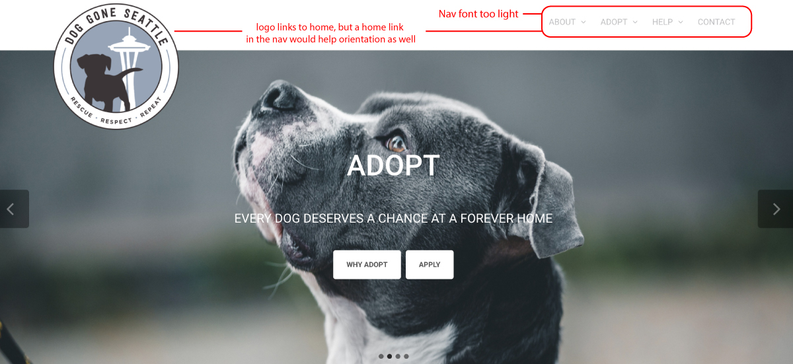
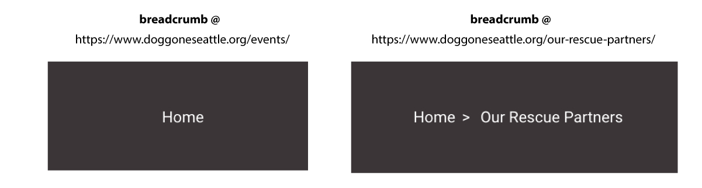
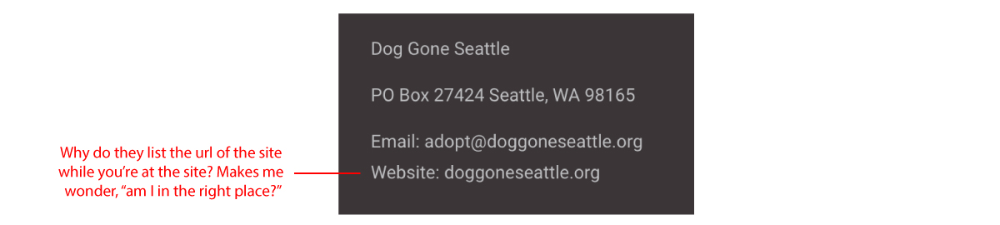

Website usability test of Dog Gone Seattle
Dog Gone Seattle is a non-profit dog rescue, adoption and fostering organization. Their site is meant to inform visitors of the their mission, take donations and introduce people to the pups that can be adopted. Their site is built on Wordpress and I give them credit for A. even creating such a noble organization with a great cause and B. for even attempting to put a website together. There are several criteria I will be using to critique the usability of this site, including:
- Navigation: is it effective?
- Breadcrumbs: do I know where I am?
- Homepage: is there a visual hierarchy of information?
- Tag lines: Are they working?
Usability Review
Navigation: is it effective?
The navigation on this site is flawed. The first issue I noticed was the font contrast on the nav links. If the links are the signs that point the user to where they need to go they need to be bold or at least stand out in some way - if this site were a physical store, the signage would be awkward and confusing.
The main navigation on this site also confused me because some of the top level links are clickable, whereas some only had pages linked to the nested links within the top level. It would make more sense if the top level links, for instance: ABOUT, ADOPT, HELP, and CONTACT were each their own directory pages with further links to the nested content. However, this is only really the case for the about page, the other two top level links with dropdowns didn't do anything when I clicked them and only pushed me to a new page when I clicked the dropdown links in the nav - it feels unorganized to have a nav menu that doesn't function in a consistent manner.
“Navigation isn’t just a feature of a Web site; it is the Web site, in the same way that the building, the shelves, and the cash registers are Sears. Without it, There's no there there. The Moral? Web navigation better be good. – Steve Krug
Breadcrumbs: do I know where I am?
For the most part I knew where I was on this site, however I was confused by the breadcrumbs that were put there to help orient the user. For instance when I navigated in the "about" dropdown to "our rescue" the breadcrumb at the top right of the page lists "home > our rescue." I was confused by this because I clicked the nested link inside of "about." Logically I think it would be appropriate to list the breadcrumb as "home > about > our rescue."
I was also very confused as to my location when I visited the "events" page within the about dropdown and the breadcrumb read "home." If properly set up this should have read, "home > about > events"
Another orientation issue I had with this site was that the url for the site was listed in the footer. Why? It left me wondering if the site I was currently on wasn't the actual site for the organization – this is disorienting and confusing and needs to be taken off of the site.
Homepage: is there a visual hierarchy of information?
"The Home page has to give an overview of what the site has to offer—both content (“What can I find here?”) and features (“What can I do here?”)—and how it’s all organized."" – Steve Krug
The visual hierarchy of this site could be improved, especially on the homepage where the real estate is metaphorically expensive. All of the important information and links are there but they are packed into the hero slider. As a user I don’t want to have to sit there and wait until the slider image and link that I want to use appears during the course of the animation. I think the information in the slider would be more useful if each section (volunteer, adopt, foster, donate) were uniquely designed and placed on the homepage in a hierarchical layout in order of importance.
Tag line: is it working?
I thought one thing that was working well on this site was the tagline below the logo. "Rescue, Respect, Repeat." I think it sums up this organization well, it's catchy, uses alliteration and is on every single page, being a great example of an element of persistent navigation.